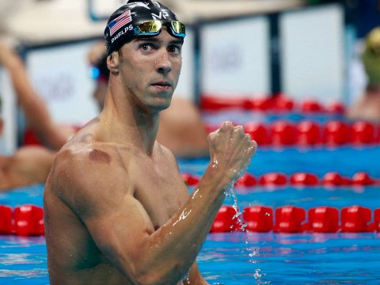

Notícias - Curiosidades
Vícios, depressão e superação
Atrás de um cara extremamente vitorioso e talentoso se escondem fraquezas e frustrações. Nem só de dias felizes viveu o astro nos últimos anos. Após Londres 2012,teve problemas com o vício em bebidas alcoólicas e jogos. Chegou a ser detido por dirigir embriagado, teve depressão, mas reencontrou o prazer em viver fazendo o que mais gosta: nadar. Estou vivendo uma vida mais livre e feliz. É uma mudança enorme. Não me sinto mais carregando pesos. A maior mudança é que estou muito mais aberto. Mantenho as pessoas importantes por perto. Estou mais engajado em tudo que faço. O processo que passei é difícil e desafiador, mas não mudaria nada. Tudo acontece por uma razão."
Técnico quase pai
A parceria com Bob Bowman começou logo no início da carreira de Phelps, aos 11 anos. O treinador foi o primeiro a identificar o incrível potencial do menino e, desde então, foi o grande responsável pelo sucesso do maior fenômeno olímpico. E a ligação entre eles vai bem além das piscinas. Phelps, que sempre foi comandado por Bob e cresceu afastado do pai biológico, criou um laço paternal com o técnico.
Hiperatividade e bullying
Aos 9 anos, Phelps foi diagnosticado com o Transtorno do Déficit de Atenção e Hiperatividade. A natação, aliada à terapia e medicamentos, foi fundamental no tratamento do menino, que tinha dificuldades de se concentrar nas atividades. Mas este não foi o único problema enfrentado por ele na infância. A mãe Debbie revelou que o filho também sofria muito bullying por causa do tamanho de suas orelhas.